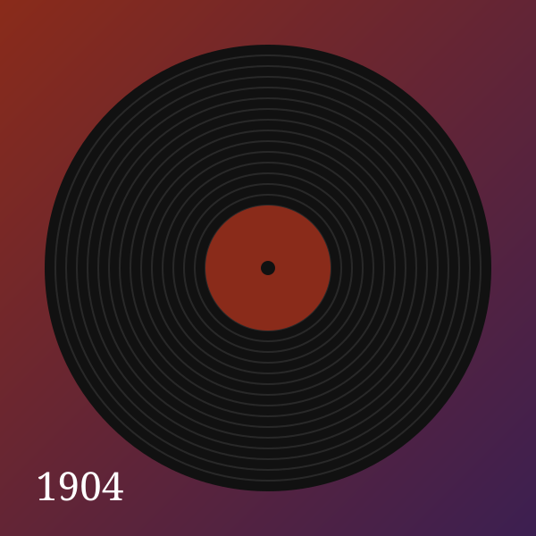

Enrico Caruso — “Vesti la giubba” (1904)

Background: The Library of Congress catalog record identifies the recording date as 1 February 1904, label Victor, catalog 930, matrix B-1002, take 1, and recording location New York. The record's issue/publication date is not separately displayed in the metadata retrieved here. The 1904 catalog number and period discographies support an early issue, but the release date still needs confirmation from a contemporary Victor catalog or trade advertisement before this candidate is marked fully verified.
Candidate id: GM-IT-001
Performer: Enrico Caruso, tenor
Title: “Vesti la giubba” (also catalogued as I pagliacci / Pagliacci. Vesti la giubba)
Original language: Italian
Genre: Opera aria; from Pagliacci
Recording date: 1904-02-01 (Library of Congress National Jukebox item metadata)
Recording location: New York, New York
Why it fits / decision: Retain as a strong PARTIALLY VERIFIED candidate for a mix concerned with betrayal, grief, and the performance of composure after injury. It is not a “revenge” track in isolation. The 1904 LOC master is preferable to Caruso's later 1907 orchestral re-recording for this project because its metadata is explicit and it predates the cutoff by more than two decades. It still requires publication-date and rights/transfer confirmation before commercial use.